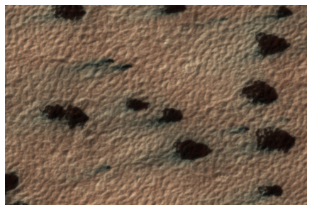
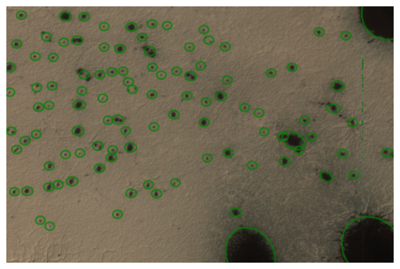
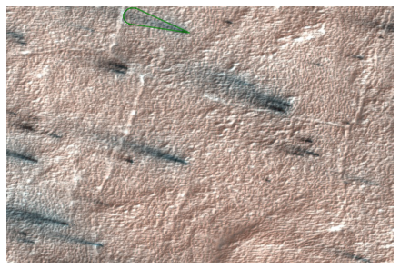
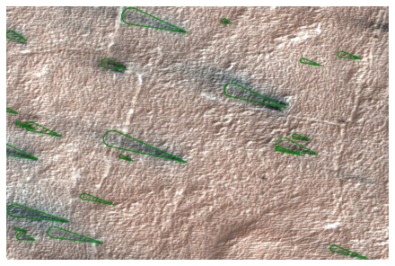
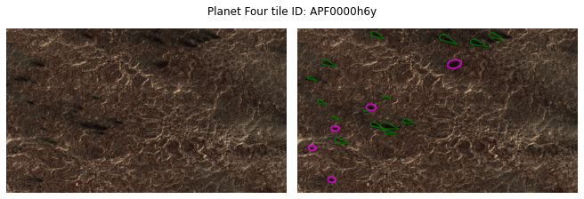
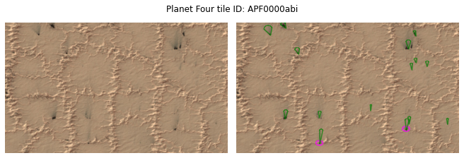
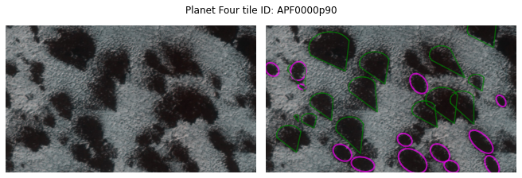

from p4tools import io
from p4tools import markings as m
from p4tools import plottingPlotting examples
plotting stuff with
p4tools
from planet4 import markings
from planet4 import plotting as p4plot--------------------------------------------------------------------------- ModuleNotFoundError Traceback (most recent call last) Cell In[2], line 1 ----> 1 from planet4 import markings 2 from planet4 import plotting as p4plot ModuleNotFoundError: No module named 'planet4'
ids = "APF00006tp APF0000tld APF000018t".split()plotting.plot_original_tile(ids[0])
plotting.plot_original_and_fans(ids[1])
Downloading catalog catalogs/fans.csv
tileblotches = m.TileBlotches(ids[2])Downloading catalog catalogs/blotches.csvtileblotches.plot()
fans = io.get_fans_for_tile(ids[1])fans.shape(22, 24)fan = m.Fan(fans.iloc[0])fanmarkings.Fan object. Input data:
base: [396.65 67.23]
armlength: 130.9202339705439
arm1: [267.57461777 45.32900995]
arm2: [281.23716847 5.42396484]fan.plot()
plotting.plot_fans_for_tile(ids[1])
find good combo images
plotting.plot_original_fans_blotches('APF000018t', save=True)Warning: No fans found.
fans.head()| marking_id | angle | distance | tile_id | image_x | image_y | n_votes | obsid | spread | version | ... | y_angle | l_s | map_scale | north_azimuth | BodyFixedCoordinateX | BodyFixedCoordinateY | BodyFixedCoordinateZ | PlanetocentricLatitude | PlanetographicLatitude | Longitude | |
|---|---|---|---|---|---|---|---|---|---|---|---|---|---|---|---|---|---|---|---|---|---|
| 0 | F000000 | 205.56 | 179.71 | APF0000ci9 | 2270.76 | 24336.16 | 35 | ESP_012079_0945 | 88.03 | 1 | ... | -0.43 | 214.785 | 0.25 | 126.856883 | -65.804336 | 261.407884 | -3370.504345 | -85.427383 | -85.480829 | 104.129523 |
| 1 | F000001 | 185.39 | 179.62 | APF0000cia | 3391.21 | 5640.60 | 15 | ESP_012079_0945 | 21.35 | 1 | ... | -0.09 | 214.785 | 0.25 | 126.856883 | -67.219114 | 257.011589 | -3370.631413 | -85.493546 | -85.546226 | 104.656897 |
| 2 | F000002 | 184.98 | 500.27 | APF0000cia | 3509.96 | 5876.70 | 10 | ESP_012079_0945 | 18.91 | 1 | ... | -0.09 | 214.785 | 0.25 | 126.856883 | -67.170611 | 257.055226 | -3370.630794 | -85.493039 | -85.545725 | 104.644396 |
| 3 | F000004 | 184.29 | 105.43 | APF0000cia | 3716.27 | 5824.50 | 6 | ESP_012079_0945 | 26.41 | 1 | ... | -0.07 | 214.785 | 0.25 | 126.856883 | -67.127761 | 257.024926 | -3370.635002 | -85.493723 | -85.546401 | 104.637107 |
| 4 | F000005 | 189.42 | 109.50 | APF0000cia | 3452.17 | 6033.00 | 3 | ESP_012079_0945 | 22.58 | 1 | ... | -0.16 | 214.785 | 0.25 | 126.856883 | -67.169940 | 257.096267 | -3370.628302 | -85.492368 | -85.545061 | 104.642019 |
5 rows × 24 columns
plotting.plot_x_random_tiles_with_n_fans(3, 15, save=True)


io.get_hirise_id_for_tile('APF0000wfo')'ESP_020953_0925'plotting.plot_original_and_fans("APF000003x")
plotting.plot_original_and_blotches("APF000003x")
plotting.plot_original_fans_blotches("APF000003x")
plotting.plot_original_fans_blotches("APF00000cl")